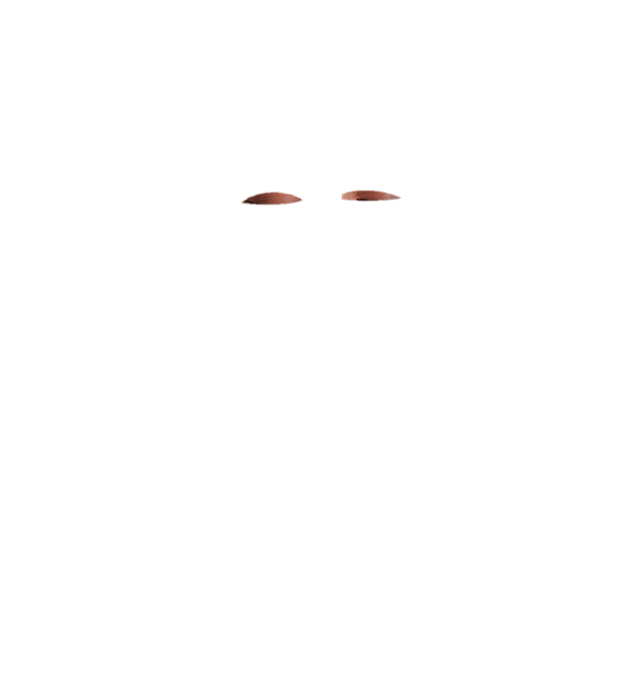
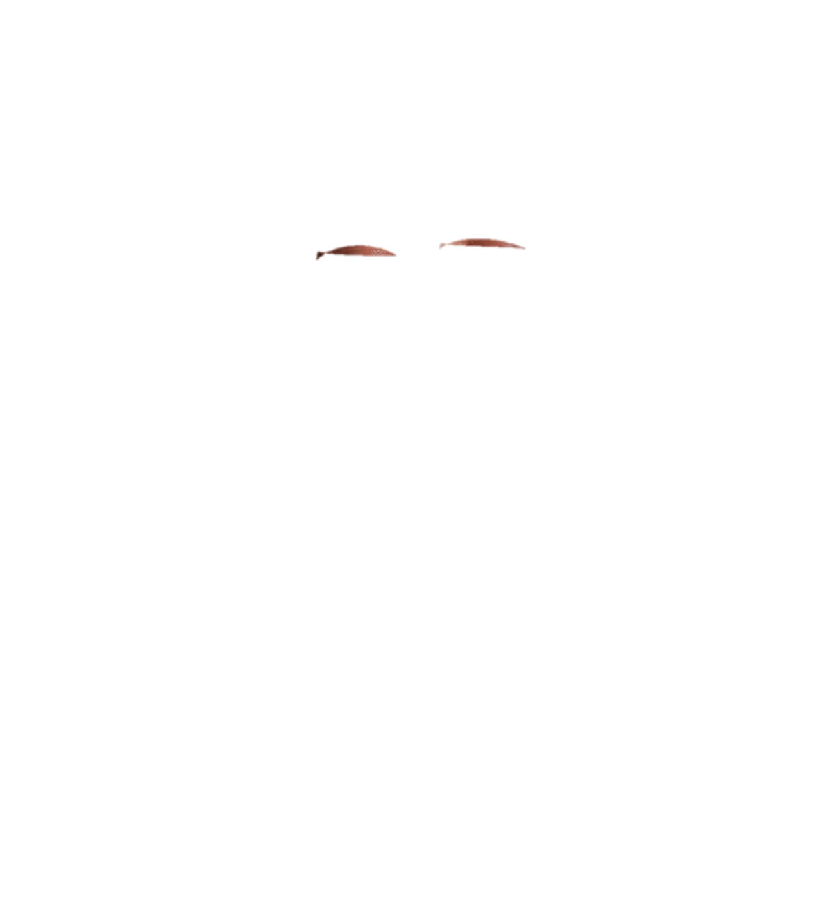
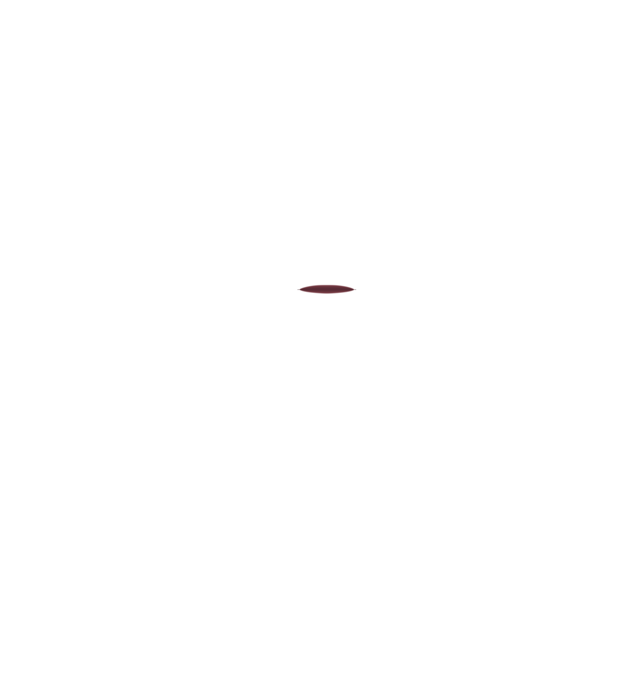
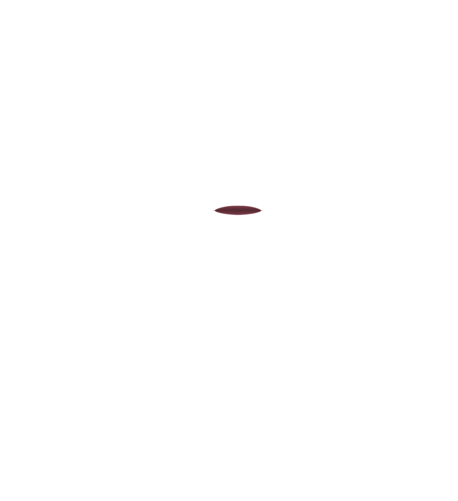

IDLE · SLOW BREATH · EYES MAY BLINK
Motion: slow scale only, from 100% to 100.7%, with a smooth return.
Alignment: portrait, eyelids, and all mouth states move together as one layer group.
Scope: isolated 2D preview only; no 3D Avatar, Earth, hologram, or interface changes.
Accessibility: reduced-motion preference disables the breathing and blink preview.